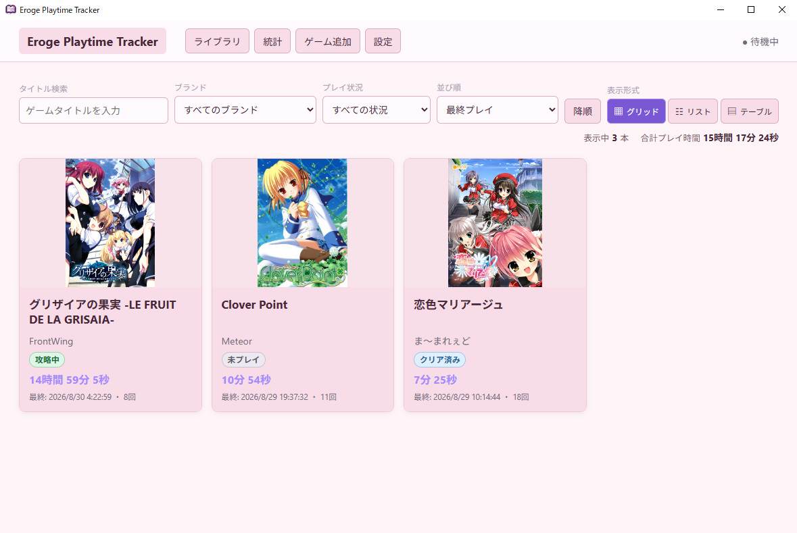
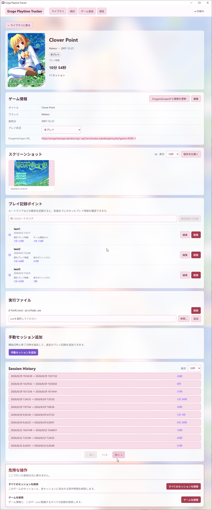
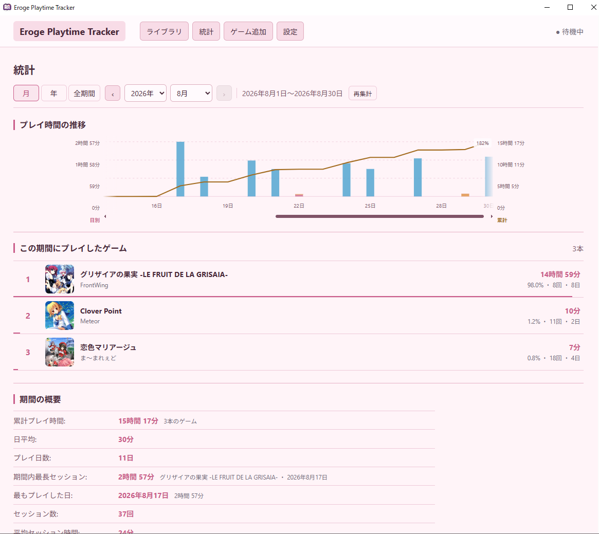
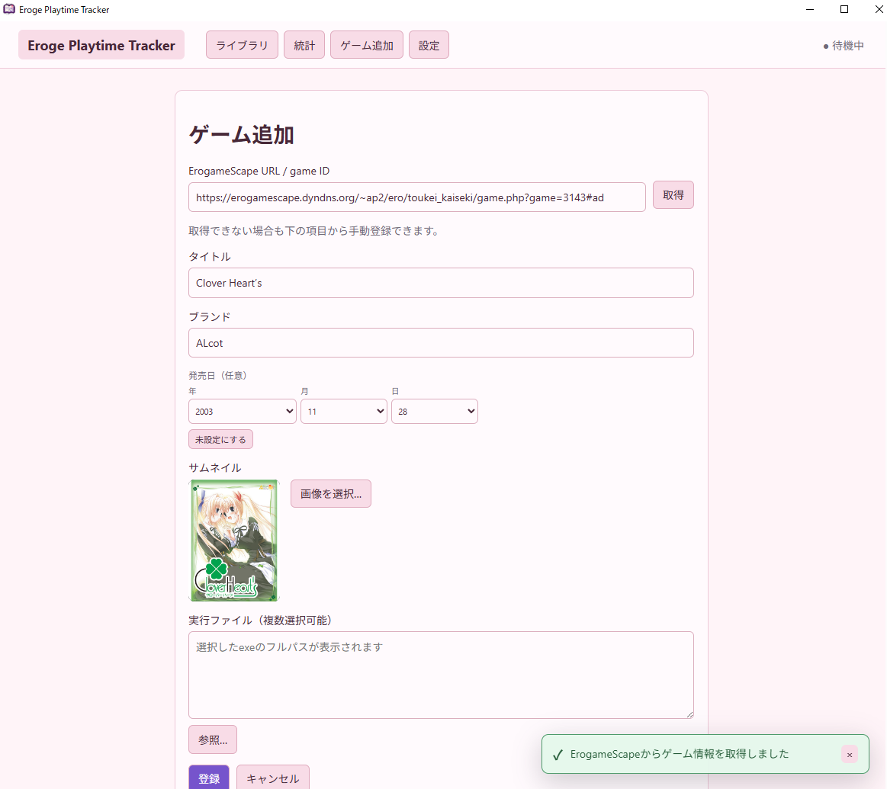
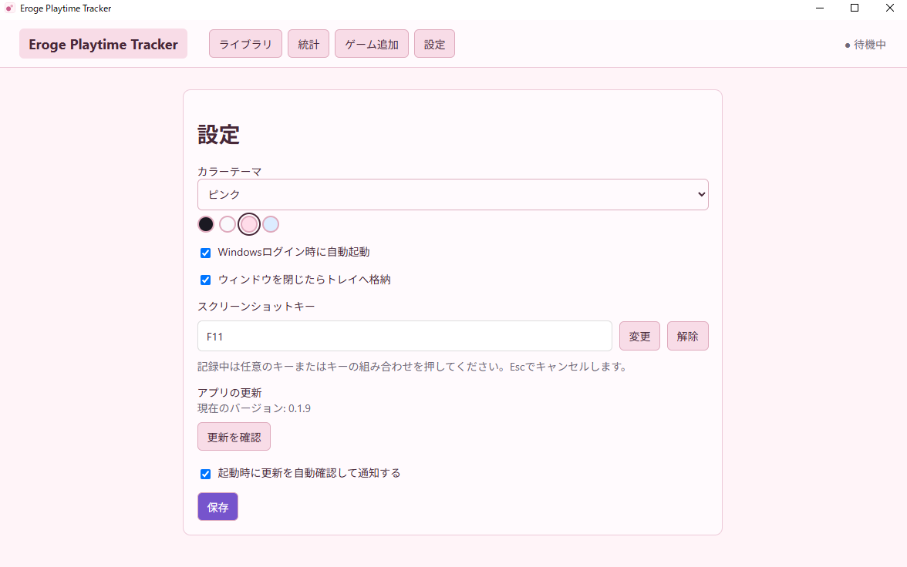

Eroge Playtime Tracker
エロゲのプレイ時間を 自動計測・記録
ゲームの起動・終了を検知し、バックグラウンド時間を除いてプレイ時間を自動で記録します。
- Windows 10 / 11 x64
- 無料・オープンソース
- 履歴はPC内保存・外部送信なし

3ステップで自動記録
インストール後はゲームの実行ファイルを登録するだけです。計測中はEroge Playtime Trackerを起動しておきます。
-
インストール
最新版のWindows x64用インストーラーをダウンロードして実行します。
-
ゲームを登録
実行ファイルを選びます。ErogameScapeのURLまたはgame IDからタイトルやブランドなども取得できます。
-
起動して記録
登録したゲームを起動すると、1回の起動を1セッションとして自動で記録します。
画面
ライブラリ
登録したゲームとプレイ時間を一覧表示します。サムネイルの実行ボタンからゲームを起動でき、検索、絞り込み、並び替え、グリッド・リスト・テーブル表示にも対応しています。
ゲーム詳細
ゲーム情報、合計プレイ時間、タイムスタンプ、セッション履歴、スクリーンショット、実行ファイルを確認・編集できます。

統計
月・年・全期間を指定して、プレイ時間の推移、ゲーム別の内訳、プレイ日数やセッション数を確認できます。

ゲーム追加
ErogameScapeのURLまたはgame IDから情報を取得するか、タイトルやブランドなどを手動で入力し、実行ファイルを登録します。

設定
カラーテーマ、自動起動、トレイへの格納、スクリーンショットキー、アップデート確認を設定し、PC移行用データのエクスポート・インポートも行えます。

プレイ時間の計測方法
登録したゲームの起動と終了を検知し、1回の起動を1つのセッションとして記録します。プレイ時間は、記録したセッションの開始時刻と終了時刻をもとに算出します。
ゲームのウィンドウが表示されていても、ほかのアプリを操作している間はバックグラウンド区間として記録します。セッションの開始から終了までの時間から、この区間を除いた時間がプレイ時間になります。
よくある質問
計測中はアプリを起動しておく必要がありますか？
はい。Eroge Playtime Trackerを起動しておく必要があります。設定からWindowsログイン時の自動起動を有効にできます。
ゲームがバックグラウンドにある時間も加算されますか？
いいえ。ゲームのウィンドウが表示されていて、そのゲームがフォアグラウンドではない期間はバックグラウンドとして記録し、セッション時間から除外します。
Steam以外のゲームも登録できますか？
はい。Steamとの連携を前提とせず、Windowsの実行ファイルを選んでゲームを登録します。
PCを移行するとき、記録したデータを引き継げますか？
はい。設定画面の「データの移行」からバックアップファイルをエクスポートし、新しいPCでインポートできます。ゲーム、プレイ履歴、設定、サムネイルを移行でき、スクリーンショットを含めるか選択できます。ゲーム本体は含まれません。インポートは現在のデータとの統合ではなく置き換えですが、置き換える直前のデータは自動でバックアップされます。
記録はあとから修正できますか？
はい。ゲーム詳細画面から手動セッションを追加し、セッション日時やバックグラウンド区間を編集・削除できます。